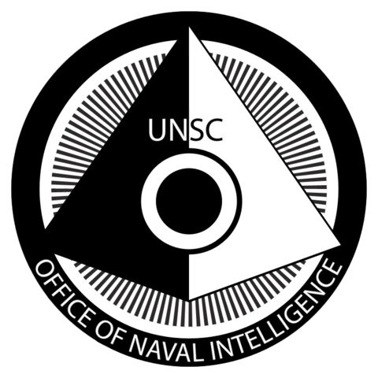

ONI
Das Office of Naval Intelligence ist der millitärische Nachrichtendienst des UNSC. Hauptaufgabe des ONI sind Propaganda, Überwachung, Forschung und Entwicklung. Die meisten Operationen die diese Behörde durchgeführt hat waren nicht genehmigt. Das Motto des ONI lautet: "semper vigilans" - "immer wachsam".

Quellen und weiter Informationen
ONI, Halo wikia